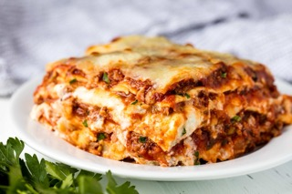

Easy Slow Cooker Lasagna

Description
This easy slow cooker lasagna recipe is a delicious homemade lasagna that’s so easy to make in the slow cooker!
Ingrediens
- 1 (15 ounce) container Polly-O original ricotta cheese
- 1 (7 ounce) package Kraft shredded 2% milk mozzarella cheese, divided
- ¼ cup Kraft grated Parmesan cheese, divided
- 2 tablespoons chopped fresh parsley
- 1 large egg
- 1 pound ground beef
- 1 (24 ounce) jar spaghetti sauce
- 1 cup water
- 6 lasagna noodles, uncooked
Steps
- Combine ricotta cheese, 1 ½ cups mozzarella cheese, 2 tablespoons Parmesan cheese, parsley, and egg in a bowl; set aside.
- Brown meat in a large skillet; drain. Stir in spaghetti sauce and water.
- Spoon 1 cup meat sauce into a slow cooker; top with ½ noodles (broken to fit) and ½ ricotta mixture. Add 2 cups meat sauce; top with remaining ½ noodles (broken to fit), remaining ½ ricotta mixture, and remaining meat sauce. Cover slow cooker with lid.
- Cook on Low until liquid is absorbed, 4 to 6 hours. Sprinkle with remaining mozzarella cheese and remaining Parmesan cheese; let stand, covered, until melted, about 10 minutes.
Home